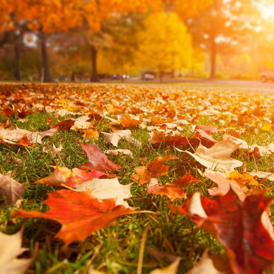
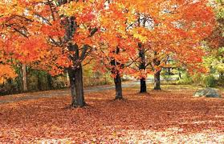

We zien weinig verschil tussen de twee afbeeldingen, maar de grootte van de bestanden zijn er ook helmaal anders
Hier zien we dat er veschillen zijn tussen de twee foto's, aan de rechter kant is de originele foto en aan de linker kant zien we de gecomprimeerde foto. Er is ook een verschil in hun grootte. Ik zal nog andere voorbeelden laten zien.

Hoe hoger de precentage van de verschil tussen de normale foto en de gecomprimeerde foto's, hoe meer verschil in de grootte en helderheid van de jpg zal anders zijn.